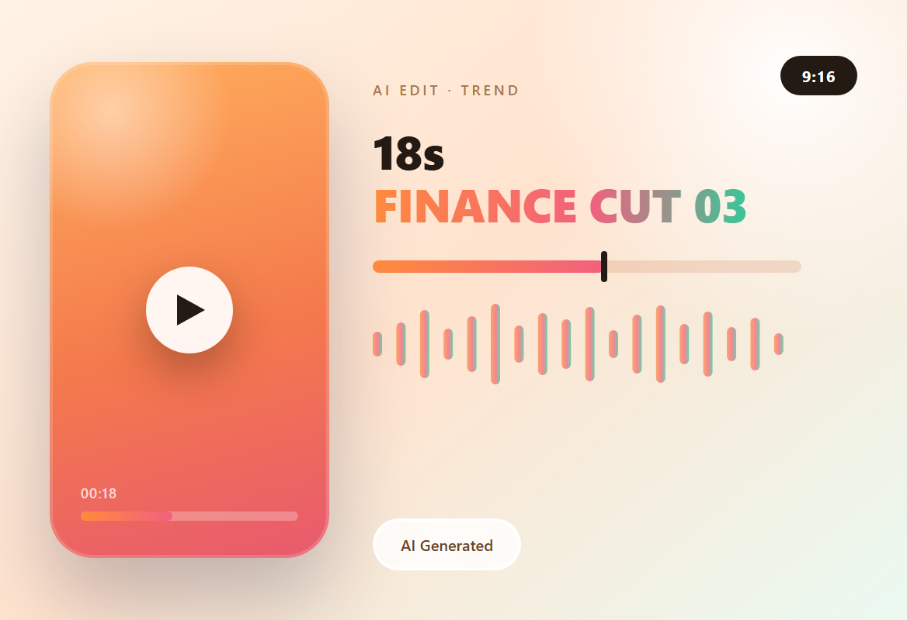

AI 剪辑 · 营销视频 · 金融类型 3
面向墨西哥年轻用户的一版：节奏照搬 TikTok —— 1 秒一个切点、贴纸式大号数字、夸张反应。把「申请有多简单」做成挑战进度，1 → 2 → 3。
主视觉

项目背景
18 秒 · 9:16 · 快节奏
目标用户是刷 TikTok 长大的墨西哥年轻人：他们对 1 秒一个切点、贴纸式大字、夸张表情的耐受度很高，慢一点就被划走。
所以这条片子不讲功能，讲「几步就完了」—— 把申请流程做成一条挑战进度条。
剪辑策略
1 秒一个切点
- 0–3 秒先给人和产品：真人举手机加夸张惊讶表情，第一帧就有品牌和手机屏幕。
- 3–13 秒把三步做成关卡：填资料、验证身份、确认额度，每一关只留一个表单动作和一个大号数字贴纸。
- 13–18 秒直接给结果（金额、CAT、付款日），再用「Descarga ahora」收尾，CTA 只出现一次，放在最后 3 秒。
制作流程
定节奏 → 生成 → 贴纸 → 收尾
-
定节奏
按 1–2 秒的切点排时间轴，每个切点都挂一个数字或一行大字，画面不留空。
-
AI 生成
真人镜头与 App 界面分开生成，界面里的文字要能看清，否则第二步就不可信。
-
做贴纸
步骤数字、进度线、结果卡片统一成品牌橙，字号按手机屏宽度的 1/8 定，缩到 390 宽也能读。
-
收尾
字幕全部压在中间安全区，导出 720 × 1280 MP4；首帧就是品牌画面，可以直接当封面。
成片
720 × 1280 · 18 秒